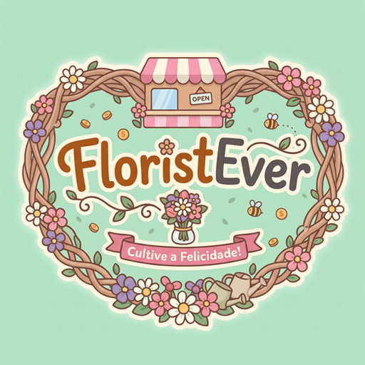

FloristEver
Uma floricultura acolhedora para momentos de tranquilidade
Podes alterar o nome mais tarde nas configurações.

LIGHT GROUPPreparando o jardim...
Powered by Light GroupInveste os teus lucros para expandir o teu jardim e automatizar tarefas!
Receitas e despesas acumuladas; o saldo inicial não conta como receita.
Um dia de trabalho dura 6 minutos. O salário é cobrado no início de cada novo dia.
Compra cada habilidade para definir uma reserva; os ajudantes dão prioridade às flores abaixo do mínimo.
Contrata primeiro um florista de ramos; depois escolhe as categorias a privilegiar.
Completa objetivos diários e semanais, depois reclama as recompensas antes de as missões renovarem.
O progresso fica guardado entre sessões e nunca expira.
Explora as zonas desbloqueadas e encontra as recordações escondidas. São colecionáveis visuais, sem prémios de moedas.
Escolhe em que queres investir. Estas compras são opcionais e não bloqueiam a progressão do jardim.
Compra mais espaço para cultivar as flores que já conheces.
Mais opções opcionais poderão ser adicionadas à Loja no futuro.
Clica para adicionar ao ramo (até 5 flores):
Adiciona mais flores para descobrir combinações aromáticas e poéticas.
Encomendas recorrentes que renovam a cada florada.
Conhece as espécies do jardim e consulta os ramos que catalogaste.
Colhe as espécies pedidas e cataloga o ramo da coleção para montar uma exposição visual na loja.
FLORISTEVER · PERSONALIZAÇÃO
Personaliza a floricultura e o ambiente sonoro.
O nome aparece na placa da loja e fica guardado neste dispositivo.
Ajusta a forma como exploras e organizas o jardim.
Escolhe o lado do movimento e ajusta o tamanho dos controlos.
Não foi possível guardar estas definições. Foram repostas as opções anteriores.
Move e redimensiona a HUD, notificações e controlos. Arrasta ou usa as setas para ajustar a posição.
Escolhe um ambiente e define o teu estilo de decoração.
A escolha é cosmética e não altera o progresso nem as interações.
Automático ativa os temas de evento. Padrão repõe o visual habitual.
Os efeitos luminosos foram temporariamente simplificados para manter o jogo fluido.
Não foi possível guardar esta preferência. O visual anterior foi mantido.
Reposiciona canteiros, bancos, placas e outros elementos decorativos.
Sincroniza o progresso entre Web, Android e Windows.
Ajuda, detalhes da aplicação e ações de manutenção.
Escolhe como a aplicação ocupa o ecrã.
Revê os controlos, as vendas, os menus e a progressão.
FloristEver v1.0.8
Obrigado por jogares FloristEver
Powered By Light Group
Desejas recomeçar do zero?
Escolhe as flores da mochila e a quantidade a transformar em composto. O descarte é permanente e não dá moedas nem stock.
Selecionadas: 0
A mochila mudou. Fecha e volta a abrir o compostor para atualizar as quantidades.
Não foi possível guardar o descarte. As flores continuam na mochila.
Os teus floristas e o caixa mantiveram a loja em funcionamento enquanto estiveste fora.
Uma floricultura acolhedora para momentos de tranquilidade
Podes alterar o nome mais tarde nas configurações.
GUIA DE BOAS-VINDAS
Uma dica para o telemóvel
Roda o ecrã na horizontal para veres melhor o jardim. Também podes continuar na vertical.